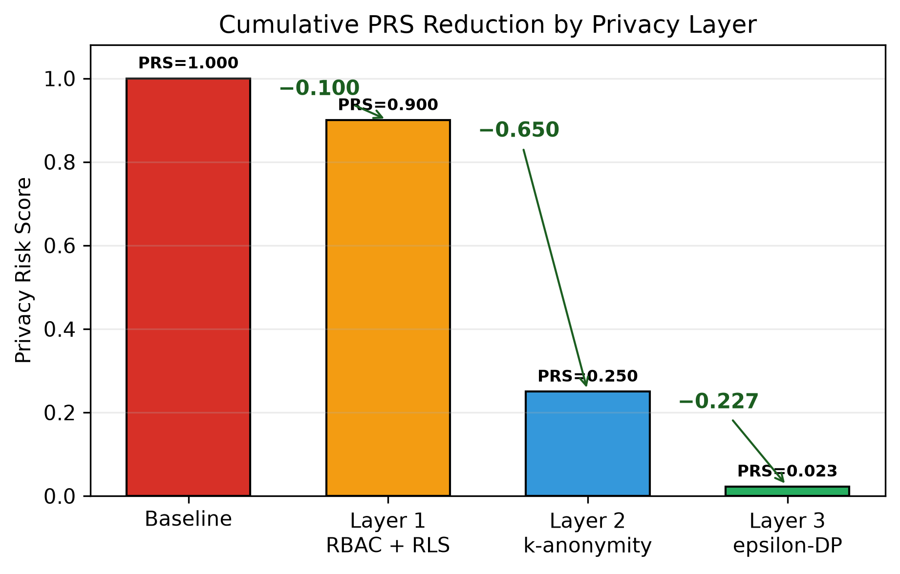

Care needs detail
A doctor may need a complete clinical view. A nurse needs operational facts. A patient should see only their own record. Access must follow purpose.
A hospital database needs more than one lock. PriDB-Health connects access control, safe research releases, and private statistics—and makes the result measurable.
The story
A health record helps a doctor today and may help a researcher discover something tomorrow. The challenge is keeping it useful without making a person visible.
A doctor may need a complete clinical view. A nurse needs operational facts. A patient should see only their own record. Access must follow purpose.
Removing names is not enough. Seemingly ordinary fields can reconnect a row to a person. Research releases need measurable group protection.
Even a simple count may reveal something when asked repeatedly or about a tiny group. Differential privacy adds calibrated uncertainty.
A list of security tools is not a result. Reviewers need assumptions, tests, trade-offs, data, and figures they can inspect and reproduce.
The research gap
Each mechanism protects a different boundary. Evaluating one in isolation can leave the system around it unmeasured.
RBAC can stop an unauthorized login while exported rows remain linkable through background knowledge.
Generalized rows do not automatically bound what repeated statistics can reveal about a group.
RRR, l-diversity, t-closeness, and DP error answer different questions. Cross-layer comparison needs an explicit common frame.
Policies described in prose can diverge from running permissions. Database-native controls make promises testable.
The architecture
Select a layer to see its job. The design is strongest because the layers do not pretend to solve the same problem.
Five roles, row-level policies, column grants, secured views, constraints, and an append-only audit path for non-admin users.
Generalization and whole-class suppression reduce linkage and sensitive-attribute disclosure in researcher-facing microdata.
Calibrated Laplace noise protects counts and bounded averages. Smaller epsilon means stronger privacy and more expected error.
The evidence
The experiment is deterministic and uses only synthetic records. Eight configurations make the contribution of each added layer visible.

Try it yourself
This educational simulator follows the published PRS formula. It runs entirely in your browser and stores nothing.
Turn layers on, choose k, and move epsilon.
All three layers are active. Under the study configuration, this is the lowest-risk tested setting.
Imagine the true answer is the number of patients matching a research condition. Differential privacy returns a slightly changed answer.
The answer changed by +6. Run it again: fresh randomness can produce a different result while the privacy budget stays the same.
Research figures
Select any figure to inspect it. PDF versions and source CSVs are available in the repository.
The green three-layer configurations occupy the lowest-risk region. The right panel keeps the substantial anonymization utility cost visible.
Combining more quasi-identifiers increases uniqueness in the synthetic baseline.
Risk falls, while NCP reminds us that generalization and suppression reduce detail.
Smaller epsilon increases mean error for counts and bounded averages.
The strict ladder makes the cumulative experimental effect easy to inspect.
Research integrity
Privacy quest
Young learners can follow the shield story. Researchers can inspect every assumption, metric, policy, and output.
Play with the sliders and discover why one lock is not enough.
Reproduce the pipeline and connect each equation to a figure.
Challenge the weights, attacks, datasets, and threat model.
Continue the work
Replicate the study, test a new attack, propose a better metric, or extend the architecture to longitudinal and multi-hospital data.